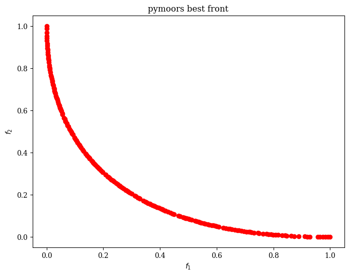

Installation
You can install pymoors directly from PyPi doing
pip install pymoors
Example: The Multi-Objective Knapsack Problem
The multi-objective knapsack problem is a classic example in optimization where we aim to select items, each with its own benefits and costs, subject to certain constraints (e.g., weight capacity). In the multi-objective version, we want to optimize more than one objective function simultaneously—often, maximizing multiple benefits or qualities at once.
Mathematical Formulation
Suppose we have \(n\) items. Each item \(i\) has: - A profit \(p_i\). - A quality \(q_i\). - A weight \(w_i\).
Let \(x_i\) be a binary decision variable where \(x_i = 1\) if item \(i\) is selected and \(x_i = 0\) otherwise. We define a knapsack capacity \(C\). A common multi-objective formulation for this problem is:
Solving it with pymoors
import numpy as np
from pymoors import (
Nsga2,
RandomSamplingBinary,
BitFlipMutation,
SinglePointBinaryCrossover,
ExactDuplicatesCleaner,
)
from pymoors.typing import TwoDArray
PROFITS = np.array([2, 3, 6, 1, 4])
QUALITIES = np.array([5, 2, 1, 6, 4])
WEIGHTS = np.array([2, 3, 6, 2, 3])
CAPACITY = 7
def knapsack_fitness(genes: TwoDArray) -> TwoDArray:
# Calculate total profit
profit_sum = np.sum(PROFITS * genes, axis=1, keepdims=True)
# Calculate total quality
quality_sum = np.sum(QUALITIES * genes, axis=1, keepdims=True)
# We want to maximize profit and quality,
# so in pymoors we minimize the negative values
f1 = -profit_sum
f2 = -quality_sum
return np.column_stack([f1, f2])
def knapsack_constraint(genes: TwoDArray) -> TwoDArray:
# Calculate total weight
weight_sum = np.sum(WEIGHTS * genes, axis=1, keepdims=True)
# Inequality constraint: weight_sum <= capacity
return weight_sum - CAPACITY
algorithm = Nsga2(
sampler=RandomSamplingBinary(),
crossover=SinglePointBinaryCrossover(),
mutation=BitFlipMutation(gene_mutation_rate=0.5),
fitness_fn=knapsack_fitness,
constraints_fn=knapsack_constraint,
duplicates_cleaner=ExactDuplicatesCleaner(),
n_vars=5,
pop_size=32,
n_offsprings=32,
num_iterations=100,
mutation_rate=0.1,
crossover_rate=0.9,
keep_infeasible=False,
)
algorithm.run()
In this small example, the algorithm finds a single solution on the Pareto front: selecting the items (A, D, E), with a profit of 7 and a quality of 15. This means there is no other combination that can match or exceed both objectives without exceeding the knapsack capacity (7).
Once the algorithm finishes, it stores a population attribute that contains all the individuals evaluated during the search.
pop = algorithm.population
# Get genes
>>> pop.genes
array([[1., 0., 0., 1., 1.],
[0., 1., 0., 0., 1.],
[1., 1., 0., 1., 0.],
[0., 0., 0., 1., 1.],
[1., 0., 0., 0., 1.],
[1., 0., 0., 1., 0.],
[1., 1., 0., 0., 0.],
[0., 0., 1., 0., 0.],
[0., 1., 0., 1., 0.],
[1., 0., 0., 0., 0.],
[0., 0., 0., 1., 0.],
[0., 0., 0., 0., 1.],
[0., 1., 0., 0., 0.],
[0., 0., 0., 0., 0.]])
# Get fitness
>>> pop.fitness
array([[ -7., -15.],
[ -7., -6.],
[ -6., -13.],
[ -5., -10.],
[ -6., -9.],
[ -3., -11.],
[ -5., -7.],
[ -6., -1.],
[ -4., -8.],
[ -2., -5.],
[ -1., -6.],
[ -4., -4.],
[ -3., -2.],
[ -0., -0.]])
# Get constraints evaluation
>>> pop.constraints
array([[ 0.],
[-1.],
[ 0.],
[-2.],
[-2.],
[-3.],
[-2.],
[-1.],
[-2.],
[-5.],
[-5.],
[-4.],
[-4.],
[-7.]])
# Get rank
>>> pop.rank
array([0, 1, 1, 2, 2, 2, 3, 3, 3, 4, 4, 4, 5, 6], dtype=uint64)
Note that in this example there is just one individual with rank 0, i.e Pareto optimal. Algorithms in pymoors store all individuals with rank 0 in a special attribute best, which is list of pymoors.schemas.Individual objects
# Get best individuals
best = pop.best
>>> best
[<pymoors.schemas.Individual object at 0x11b8ec110>]
# In this small exmaple as mentioned, best is just one single individual (A, D, E)
>>> best[0].genes
array([1., 0., 0., 1., 1.])
>>> best[0].fitness
array([ -7., -15.])
>>> best[0].constraints
array([0.])
Population Size and Duplicates
Note that although the specified pop_size was 32, the final population ended up being 13 individuals,
of which 1 had rank = 0.
This is because we used the keep_infeasible=False argument,
removing any individual that did not satisfy the constraints (in this case, the weight constraint).
We also used a duplicate remover called ExactDuplicatesCleaner that eliminates all exact duplicates—
meaning whenever genes1 == genes2 in every component.
Variable Types in pymoors
In pymoors, there is no strict enforcement of whether variables are integer, binary, or real.
The core Rust implementation works with f64 ndarrays.
To preserve a specific variable type—binary, integer, or real—you must ensure that the genetic operators themselves maintain it.
It is the user's responsibility to choose the appropriate genetic operators for the variable type in question.
In the knapsack example, we use binary-style genetic operators, which is why the solutions are arrays of 0s and 1s.
Example: A Real-Valued Multi-Objective Optimization Problem
Below is a simple two-variable multi-objective problem to illustrate real-valued optimization with pymoors. We have two continuous decision variables, \( x_1 \) and \( x_2 \), both within a given range. We define two objective functions to be minimized simultaneously, and we solve this using the popular NSGA2 algorithm.
Mathematical Formulation
Let \(\mathbf{x} = (x_1, x_2)\) be our decision variables, each constrained to the interval \([-2, 2]\). We define the following objectives:
Interpretation
- \(f_1\) measures the distance of \(\mathbf{x}\) from the origin \((0,0)\) in the 2D plane.
- \(f_2\) measures the distance of \(\mathbf{x}\) from the point \((1,0)\).
Thus, \(\mathbf{x}\) must compromise between being close to \((0,0)\) and being close to \((1,0)\). There is no single point in \([-2,2]^2\) that simultaneously minimizes both distances perfectly (other than at the boundary of these trade-offs), so we end up with a Pareto front rather than a single best solution.
Solving it with pymoors
Below is a complete example in Python demonstrating how to set up this problem using and solve it with the NSGA2 genetic algorithm.
import numpy as np
from pymoors import (
Nsga2,
RandomSamplingFloat,
GaussianMutation,
ExponentialCrossover,
CloseDuplicatesCleaner
)
from pymoors.typing import TwoDArray
def fitness(genes: TwoDArray) -> TwoDArray:
x1 = genes[:, 0]
x2 = genes[:, 1]
# Objective 1: Distance to (0,0)
f1 = x1**2 + x2**2
# Objective 2: Distance to (1,0)
f2 = (x1 - 1)**2 + x2**2
# Combine the two objectives into a single array
return np.column_stack([f1, f2])
algorithm = Nsga2(
sampler=RandomSamplingFloat(min = -2, max = 2),
crossover=ExponentialCrossover(exponential_crossover_rate = 0.75),
mutation=GaussianMutation(gene_mutation_rate=0.1, sigma=0.01),
fitness_fn=fitness,
duplicates_cleaner=CloseDuplicatesCleaner(epsilon=1e-5),
n_vars=2,
pop_size=200,
n_offsprings=200,
num_iterations=200,
mutation_rate=0.1,
crossover_rate=0.9,
keep_infeasible=False,
lower_bound=-2,
upper_bound=2
)
algorithm.run()
This simple problem has a known Pareto Optimal
-
Decision-Space Pareto Front: \( \{ (x_1, 0) \mid x_1 \in [0,1] \} \)
-
Objective-Space Pareto Front: \( \{ (t^2, (t-1)^2) \mid t \in [0,1] \} \)
Each point on that curve represents a different trade-off between minimizing the distance to \((0,0)\) and to \((1,0)\).
